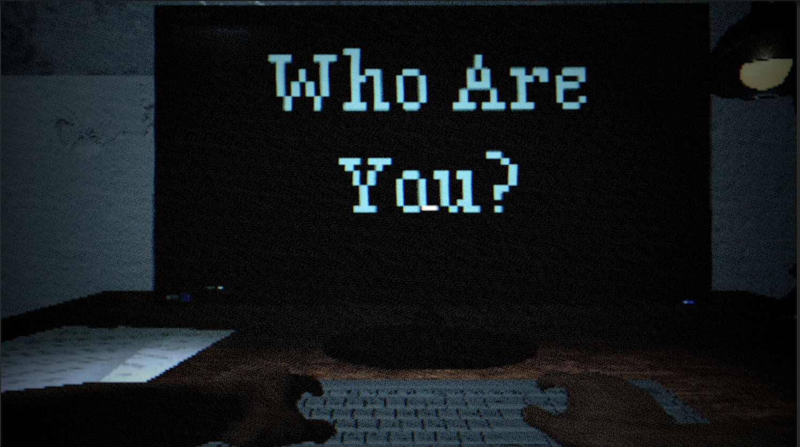

Can you still trust your own hands?
A short experimental typing horror game where your answers are rewritten, your body is not your own, and something behind you is learning how to become you.
The Overview
Who Are You is a short, experimental typing-based horror game created in 48 hours for a Spooky Game Jam. It disguises itself as a simple questionnaire at first, but gradually unfolds into a psychologically invasive cosmic-horror narrative where you lose control not only of the keyboard, but of your own identity.
You sit in front of a monochrome terminal interface, answering increasingly personal and uncanny questions. At first, you type freely. Then words begin to appear before you finish them. Your answers are overwritten, corrected, or hijacked. Eventually, even when you try to resist, the game types on your behalf.
The final reveal pulls the camera away from the terminal: the hands on the keyboard were never yours. You have been tied to a chair the entire time. A faceless figure stands behind you, typing for you, learning you, preparing to replace you. As its face slowly morphs into your own, it becomes clear that the questionnaire was never about what you think - it was about extracting enough of you to become you.
Core Experience & Mechanics
Typing as Vulnerability
The game uses a familiar, harmless action - typing - as its main horror device. By subtly overriding and auto-completing what the player tries to say, it turns basic interaction into a betrayal of trust.
Escalating Loss of Control
As the pacing accelerates, the game increasingly ignores the player's input. Resistance is possible but pointless: even the act of fighting back is swallowed by the system and turned into "correct" answers.
Under the hood, the input system switches between different modes: free typing, soft auto-correction, hard overwrite, and full autopilot. These phases are synchronized with the narrative beats, so the mechanical loss of control directly mirrors the psychological breakdown.
Cosmic Horror & Narrative Design
Rather than relying on jump scares, Who Are You focuses on a slow invasion of the player's inner space. The questions start abstract and harmless, then gradually probe values, fears, guilt, and identity. The player is never shown the monster in full, only their own answers reflected back at them in distorted form.
- Cosmic horror tone: You are not being chased - you are being overwritten.
- Body horror twist: The final reveal reframes the entire playthrough as a possession process, not a simple dialogue.
- Meta-interaction: The game's abuse of UI conventions (cursor flicker, fake input, frozen prompts) reinforces the feeling that even the interface is hostile.
48h Jam Constraints & Reflection
The 48-hour time limit heavily shaped the project. Instead of building a complex environment or multiple endings, I focused on a single-room experience with a strong central twist and a tightly controlled pacing curve. Most of the design effort went into:
- Designing input manipulation rules that feel unfair but still readable.
- Aligning visual glitches, sound cues and text behavior to the same emotional beats.
- Polishing the final reveal so that the camera move, timing, and animation sell the idea that "you were never the one typing."
If I extend this prototype in the future, I would like to explore adaptive question sets that react more directly to player hesitation and typing patterns, turning the game into a more personalized psychological mirror.